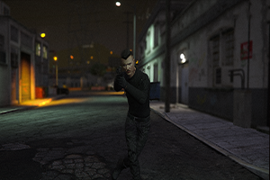
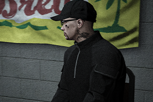
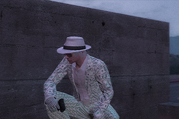
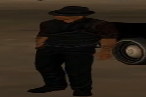
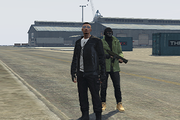
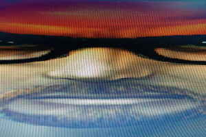

LIBERTY CITY SOĞUKTUR KUZEN
Aykut ve ekibin efsanevi GTA dublaj serisinin Liberty City sokaklarındaki nostaljik ve kahkaha dolu macerası.
Kendi halimizde eğlenirken kayda aldığımız; GTA dublajları, GMod kaosları, Minecraft serüvenleri ve nostaljik oyun videoları arşivi.
Kanalımızdaki gerçek video kayıtları; dublajlardan GMod gecelerine, Minecraft maceralarından kahkaha dolu Co-op serilerine aradığın tüm videolar burada.
Aykut ve ekibin efsanevi GTA dublaj serisinin Liberty City sokaklarındaki nostaljik ve kahkaha dolu macerası.
Aykut ve Buğra'nın GTA 5 evrenindeki saçma sapan şehir efsanelerini ve gizemleri çözmeye çalıştığı efsane anlar.
Los Santos sokaklarında başlayan absürt kovalamaca ve ekibin kontrolü tamamen kaybettiği o unutulmaz kayıt.
Ekibin sıfırdan başladığı hayatta kalma serüveninde yaşanan talihsizlikler, gece baskınları ve maden maceraları.
Hayatta kalma hadisesinin ikinci bölümünde maden kazaları, haritada kaybolmalar ve bitmek bilmeyen kaos.
Garry's Mod korku haritasında el fenerleriyle yolunu bulmaya çalışan ekibin çığlık ve kahkaha dolu anları.
Herkesin kafasına göre mod yükleyip sunucuyu çökme noktasına getirdiği, tam bir aşureye dönen GMod gecesi.
Hurda toplayıp kotayı doldurmaya çalışırken yaratıklara tek tek yem olan ekibin hüzünlü ve komik sonu.
Yeraltına inip izlenme uğruna canavarların peşinden koşan ekibin hayatta kalma ve video çekme çabası.
Korku evinde anahtar ararken bir anda açılan gizemli Messi portalı ve ekibin koptuğu o anlar.
Bütün birikimi tek elde sıfırlayan ve zengin olma hayallerini suya düşüren eğlenceli arkadaş kapışması.
Eray'ın CS:GO'daki vuruşları, mikrofon kavgaları ve arkaya müzik döşenmiş nostaljik montaj videosu.
2v2 Yoldaş modunda rütbe kasarken atılan smoke'lar, kaçan vuruşlar ve bitmek bilmeyen muhabbet.
Hayatta kalma yolculuğunda karavanı kaybetmemek için verilen amansız ve trajikomik mücadele.
2015 yılında YouTube serüvenine adım attık, 2017'den itibaren de kesintisiz video üretmeye başladık.
Dört arkadaş başladığımız bu yolculukta zamanla kadromuz genişledi, bazen eksildi ama samimiyetimiz hiç değişmedi. Discord sunucularında sabahlayarak, bol kahkaha eşliğinde kendi kurgularımızı hayata geçirdik. Ne algoritma kaygısı güttük ne de izlenme peşinde koştuk; tamamen keyif aldığımız oyunları ve projeleri kayda aldık.
GMod ve Minecraft dünyasında saatlerce sahne hazırlayıp kendi hikayelerimizi çektik.
Kendi seslendirmelerimiz ve doğal esprilerimizle her videoya özgün bir ruh kattık.
Birlikte eğlendiğimiz ve güldüğümüz anları ölümsüzleştirmek için kayda bastık.
Kamera arkasında, senaryo masasında, kurgu başında ve mikrofonun diğer ucundaki emektarlar.

Oyun fark etmeksizin her role giren, başrolü zor bırakan adam.

Render başında sabahlayan, unutulmaz repliklerin ve kurgunun mimarı.

Harita ve mod dünyasının kurucusu, aynı zamanda bu web sitesini kodlayan kişi.

Kanalın kuruluş günlerinden kalma, köşesinde çayını yudumlayan kıdemli emektar.

Özellikle senaryolu dizilerde kötü adam rollerinin bir numaralı ismi.

Eski videolarda ve projelerde çokça emeği geçen, şimdilerde inzivaya çekilmiş isim.